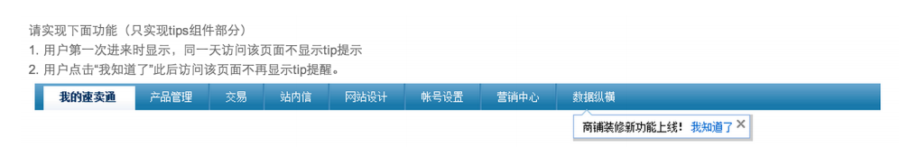

很多面试题是我自己面试BAT亲身经历碰到的。整理分享出来希望更多的前端er共同进步吧，不仅适用于求职者，对于巩固复习js更是大有裨益。
而更多的题目是我一路以来收集的，也有往年的，答案不确保一定正确，如有错误或有更好的解法，还请斧正。
附上第二篇：BAT及各大互联网公司2014前端笔试面试题--Html,Css篇
前面几题是会很基础，越下越有深度。
初级Javascript：
1.JavaScript是一门什么样的语言，它有哪些特点？
没有标准答案。
2.JavaScript的数据类型都有什么？
基本数据类型：String,boolean,Number,Undefined, Null
引用数据类型：Object(Array,Date,RegExp,Function)
那么问题来了，如何判断某变量是否为数组数据类型？
- 方法一.判断其是否具有“数组性质”，如slice()方法。可自己给该变量定义slice方法，故有时会失效
- 方法二.obj instanceof Array 在某些IE版本中不正确
- 方法三.方法一二皆有漏洞，在ECMA Script5中定义了新方法Array.isArray(), 保证其兼容性，最好的方法如下：
1 if(typeof Array.isArray==="undefined")
2 {
3 Array.isArray = function(arg){
4 return Object.prototype.toString.call(arg)==="[object Array]"
5 };
6 }
3.已知ID的Input输入框，希望获取这个输入框的输入值，怎么做？(不使用第三方框架)
1 document.getElementById(“ID”).value
4.希望获取到页面中所有的checkbox怎么做？(不使用第三方框架)
1 var domList = document.getElementsByTagName(‘input’)
2 var checkBoxList = [];
3 var len = domList.length; //缓存到局部变量
4 while (len--) { //使用while的效率会比for循环更高
5 if (domList[len].type == ‘checkbox’) {
6 checkBoxList.push(domList[len]);
7 }
8 }
5.设置一个已知ID的DIV的html内容为xxxx，字体颜色设置为黑色(不使用第三方框架)
1 var dom = document.getElementById(“ID”);
2 dom.innerHTML = “xxxx”
3 dom.style.color = “#000”
6.当一个DOM节点被点击时候，我们希望能够执行一个函数，应该怎么做？
- 直接在DOM里绑定事件：<div onclick=”test()”></div>
- 在JS里通过onclick绑定：xxx.onclick = test
- 通过事件添加进行绑定：addEventListener(xxx, ‘click’, test)
那么问题来了，Javascript的事件流模型都有什么？
- “事件冒泡”：事件开始由最具体的元素接受，然后逐级向上传播
- “事件捕捉”：事件由最不具体的节点先接收，然后逐级向下，一直到最具体的
- “DOM事件流”：三个阶段：事件捕捉，目标阶段，事件冒泡
7.什么是Ajax和JSON，它们的优缺点。
Ajax是异步JavaScript和XML，用于在Web页面中实现异步数据交互。
优点：
- 可以使得页面不重载全部内容的情况下加载局部内容，降低数据传输量
- 避免用户不断刷新或者跳转页面，提高用户体验
缺点：
- 对搜索引擎不友好（
- 要实现ajax下的前后退功能成本较大
- 可能造成请求数的增加
- 跨域问题限制
JSON是一种轻量级的数据交换格式，ECMA的一个子集
优点：轻量级、易于人的阅读和编写，便于机器（JavaScript）解析，支持复合数据类型（数组、对象、字符串、数字）
8.看下列代码输出为何？解释原因。
1 var a;
2 alert(typeof a); // undefined
3 alert(b); // 报错
解释：Undefined是一个只有一个值的数据类型，这个值就是“undefined”，在使用var声明变量但并未对其赋值进行初始化时，这个变量的值就是undefined。而b由于未声明将报错。注意未申明的变量和声明了未赋值的是不一样的。
9.看下列代码,输出什么？解释原因。
1 var a = null;
2 alert(typeof a); //object
解释：null是一个只有一个值的数据类型，这个值就是null。表示一个空指针对象，所以用typeof检测会返回”object”。
10.看下列代码,输出什么？解释原因。
1 var undefined;
2 undefined == null; // true
3 1 == true; // true
4 2 == true; // false
5 0 == false; // true
6 0 == ''; // true
7 NaN == NaN; // false
8 [] == false; // true
9 [] == ![]; // true
- undefined与null相等，但不恒等（===）
- 一个是number一个是string时，会尝试将string转换为number
- 尝试将boolean转换为number，0或1
- 尝试将Object转换成number或string，取决于另外一个对比量的类型
- 所以，对于0、空字符串的判断，建议使用 “===” 。“===”会先判断两边的值类型，类型不匹配时为false。
那么问题来了，看下面的代码，输出什么，foo的类型为什么？
1 var foo = "11"+2-"1";
2 console.log(foo);
3 console.log(typeof foo);
执行完后foo的值为111，foo的类型为Number。
1 var foo = "11"+2+"1"; //体会加一个字符串'1' 和 减去一个字符串'1'的不同
2 console.log(foo);
3 console.log(typeof foo);
执行完后foo的值为1121(此处是字符串拼接)，foo的类型为String。
11.看代码给答案。
1 var a = new Object();
2 a.value = 1;
3 b = a;
4 b.value = 2;
5 alert(a.value);
答案：2（考察引用数据类型细节）
12.已知数组var stringArray = [“This”, “is”, “Baidu”, “Campus”]，Alert出”This is Baidu Campus”。
答案：alert(stringArray.join(" "))
那么问题来了，已知有字符串foo="get-element-by-id",写一个function将其转化成驼峰表示法"getElementById"。
1 function combo(msg){ 2 var arr = msg.split("-"); 3 var len = arr.length; //将arr.length存储在一个局部变量可以提高for循环效率 4 for(var i=1;i<len;i++){ 5 arr[i]=arr[i].charAt(0).toUpperCase()+arr[i].substr(1,arr[i].length-1); 6 } 7 msg=arr.join(""); 8 return msg; 9 }
(考察基础API)
13.var numberArray = [3,6,2,4,1,5]; （考察基础API）
1) 实现对该数组的倒排，输出[5,1,4,2,6,3]
2) 实现对该数组的降序排列，输出[6,5,4,3,2,1]
1 var numberArray = [3,6,2,4,1,5];
2
3 numberArray.reverse(); // 5,1,4,2,6,3
4
5 numberArray.sort(function(a,b){ //6,5,4,3,2,1
6 return b-a;
7 })
14.输出今天的日期，以YYYY-MM-DD的方式，比如今天是2014年9月26日，则输出2014-09-26
1 var d = new Date();
2 // 获取年，getFullYear()返回4位的数字
3 var year = d.getFullYear();
4 // 获取月，月份比较特殊，0是1月，11是12月
5 var month = d.getMonth() + 1;
6 // 变成两位
7 month = month < 10 ? '0' + month : month;
8 // 获取日
9 var day = d.getDate();
10 day = day < 10 ? '0' + day : day;
11 alert(year + '-' + month + '-' + day);
15.将字符串”<tr><td>{$id}</td><td>{$name}</td></tr>”中的{$id}替换成10，{$name}替换成Tony （使用正则表达式）
答案："<tr><td>{$id}</td><td>{$id}_{$name}</td></tr>".replace(/{\$id}/g, '10').replace(/{\$name}/g, ‘Tony’);
16.为了保证页面输出安全，我们经常需要对一些特殊的字符进行转义，请写一个函数escapeHtml，将<, >, &, “进行转义
1 function escapeHtml(str) {
2 return str.replace(/[<>”&]/g, function(match) {
3 switch (match) {
4 case “<”:
5 return “<”;
6 case “>”:
7 return “>”;
8 case “&”:
9 return “&”;
10 case “\””:
11 return “"”;
12 }
13 });
14 }
17.foo = foo||bar ，这行代码是什么意思？为什么要这样写？
答案：if(!foo) foo = bar; //如果foo存在，值不变，否则把bar的值赋给foo。
短路表达式：作为"&&"和"||"操作符的操作数表达式，这些表达式在进行求值时，只要最终的结果已经可以确定是真或假，求值过程便告终止，这称之为短路求值。
18.看下列代码，将会输出什么?(变量声明提升)
1 var foo = 1;
2 function(){
3 console.log(foo);
4 var foo = 2;
5 console.log(foo);
6 }
答案：输出undefined 和 2。上面代码相当于：
1 var foo = 1;
2 function(){
3 var foo;
4 console.log(foo); //undefined
5 foo = 2;
6 console.log(foo); // 2;
7 }
函数声明与变量声明会被JavaScript引擎隐式地提升到当前作用域的顶部，但是只提升名称不会提升赋值部分。
19.用js实现随机选取10--100之间的10个数字，存入一个数组，并排序。
1 var iArray = [];
2 funtion getRandom(istart, iend){
3 var iChoice = istart - iend +1;
4 return Math.floor(Math.random() * iChoice + istart;
5 }
6 for(var i=0; i<10; i++){
7 iArray.push(getRandom(10,100));
8 }
9 iArray.sort();
20.把两个数组合并，并删除第二个元素。
1 var array1 = ['a','b','c'];
2 var bArray = ['d','e','f'];
3 var cArray = array1.concat(bArray);
4 cArray.splice(1,1);
21.怎样添加、移除、移动、复制、创建和查找节点（原生JS，实在基础，没细写每一步）
1）创建新节点
createDocumentFragment() //创建一个DOM片段
createElement() //创建一个具体的元素
createTextNode() //创建一个文本节点
2）添加、移除、替换、插入
appendChild() //添加
removeChild() //移除
replaceChild() //替换
insertBefore() //插入
3）查找
getElementsByTagName() //通过标签名称
getElementsByName() //通过元素的Name属性的值
getElementById() //通过元素Id，唯一性
22.有这样一个URL：http://item.taobao.com/item.htm?a=1&b=2&c=&d=xxx&e，请写一段JS程序提取URL中的各个GET参数(参数名和参数个数不确定)，将其按key-value形式返回到一个json结构中，如{a:'1', b:'2', c:'', d:'xxx', e:undefined}。
答案：
1 function serilizeUrl(url) {
2 var result = {};
3 url = url.split("?")[1];
4 var map = url.split("&");
5 for(var i = 0, len = map.length; i < len; i++) {
6 result[map[i].split("=")[0]] = map[i].split("=")[1];
7 }
8 return result;
9 }
23.正则表达式构造函数var reg=new RegExp("xxx")与正则表达字面量var reg=//有什么不同？匹配邮箱的正则表达式？
答案：当使用RegExp()构造函数的时候，不仅需要转义引号（即\"表示"），并且还需要双反斜杠（即\\表示一个\）。使用正则表达字面量的效率更高。
邮箱的正则匹配：
1 var regMail = /^([a-zA-Z0-9_-])+@([a-zA-Z0-9_-])+((.[a-zA-Z0-9_-]{2,3}){1,2})$/;
24.看下面代码，给出输出结果。
1 for(var i=1;i<=3;i++){
2 setTimeout(function(){
3 console.log(i);
4 },0);
5 };
答案：4 4 4。
原因：Javascript事件处理器在线程空闲之前不会运行。那么问题来了，如何让上述代码输出1 2 3？
1 for(var i=1;i<=3;i++){
2 setTimeout((function(a){ //改成立即执行函数
3 console.log(a);
4 })(i),0);
5 };
6
7 1 //输出
8 2
9 3
25.写一个function，清除字符串前后的空格。（兼容所有浏览器）
使用自带接口trim()，考虑兼容性：
1 if (!String.prototype.trim) { 2 String.prototype.trim = function() { 3 return this.replace(/^\s+/, "").replace(/\s+$/,""); 4 } 5 } 6 7 // test the function 8 var str = " \t\n test string ".trim(); 9 alert(str == "test string"); // alerts "true"
26.Javascript中callee和caller的作用？
答案：
caller是返回一个对函数的引用，该函数调用了当前函数；
callee是返回正在被执行的function函数，也就是所指定的function对象的正文。
那么问题来了？如果一对兔子每月生一对兔子；一对新生兔，从第二个月起就开始生兔子；假定每对兔子都是一雌一雄，试问一对兔子，第n个月能繁殖成多少对兔子？（使用callee完成）
1 var result=[];
2 function fn(n){ //典型的斐波那契数列
3 if(n==1){
4 return 1;
5 }else if(n==2){
6 return 1;
7 }else{
8 if(result[n]){
9 return result[n];
10 }else{
11 //argument.callee()表示fn()
12 result[n]=arguments.callee(n-1)+arguments.callee(n-2);
13 return result[n];
14 }
15 }
16 }
中级Javascript：
1.实现一个函数clone，可以对JavaScript中的5种主要的数据类型（包括Number、String、Object、Array、Boolean）进行值复制
- 考察点1：对于基本数据类型和引用数据类型在内存中存放的是值还是指针这一区别是否清楚
- 考察点2：是否知道如何判断一个变量是什么类型的
- 考察点3：递归算法的设计
1 // 方法一：
2 Object.prototype.clone = function(){
3 var o = this.constructor === Array ? [] : {};
4 for(var e in this){
5 o[e] = typeof this[e] === "object" ? this[e].clone() : this[e];
6 }
7 return o;
8 }
9
10 //方法二：
11 /**
12 * 克隆一个对象
13 * @param Obj
14 * @returns
15 */
16 function clone(Obj) {
17 var buf;
18 if (Obj instanceof Array) {
19 buf = []; //创建一个空的数组
20 var i = Obj.length;
21 while (i--) {
22 buf[i] = clone(Obj[i]);
23 }
24 return buf;
25 }else if (Obj instanceof Object){
26 buf = {}; //创建一个空对象
27 for (var k in Obj) { //为这个对象添加新的属性
28 buf[k] = clone(Obj[k]);
29 }
30 return buf;
31 }else{ //普通变量直接赋值
32 return Obj;
33 }
34 }
2.如何消除一个数组里面重复的元素？
1 var arr=[1,2,3,3,4,4,5,5,6,1,9,3,25,4];
2 function deRepeat(){
3 var newArr=[];
4 var obj={};
5 var index=0;
6 var l=arr.length;
7 for(var i=0;i<l;i++){
8 if(obj[arr[i]]==undefined)
9 {
10 obj[arr[i]]=1;
11 newArr[index++]=arr[i];
12 }
13 else if(obj[arr[i]]==1)
14 continue;
15 }
16 return newArr;
17
18 }
19 var newArr2=deRepeat(arr);
20 alert(newArr2); //输出1,2,3,4,5,6,9,25
3.小贤是一条可爱的小狗(Dog)，它的叫声很好听(wow)，每次看到主人的时候就会乖乖叫一声(yelp)。从这段描述可以得到以下对象：
1 function Dog() {
2 this.wow = function() {
3 alert(’Wow’);
4 }
5 this.yelp = function() {
6 this.wow();
7 }
8 }
小芒和小贤一样，原来也是一条可爱的小狗，可是突然有一天疯了(MadDog)，一看到人就会每隔半秒叫一声(wow)地不停叫唤(yelp)。请根据描述，按示例的形式用代码来实。（继承，原型，setInterval）
答案：
1 function MadDog() {
2 this.yelp = function() {
3 var self = this;
4 setInterval(function() {
5 self.wow();
6 }, 500);
7 }
8 }
9 MadDog.prototype = new Dog();
10
11 //for test
12 var dog = new Dog();
13 dog.yelp();
14 var madDog = new MadDog();
15 madDog.yelp();
4.下面这个ul，如何点击每一列的时候alert其index?（闭包）
1 <ul id=”test”>
2 <li>这是第一条</li>
3 <li>这是第二条</li>
4 <li>这是第三条</li>
5 </ul>
答案：
1 // 方法一：
2 var lis=document.getElementById('2223').getElementsByTagName('li');
3 for(var i=0;i<3;i++)
4 {
5 lis[i].index=i;
6 lis[i].onclick=function(){
7 alert(this.index);
8 };
9 }
10
11 //方法二：
12 var lis=document.getElementById('2223').getElementsByTagName('li');
13 for(var i=0;i<3;i++)
14 {
15 lis[i].index=i;
16 lis[i].onclick=(function(a){
17 return function() {
18 alert(a);
19 }
20 })(i);
21 }
5.编写一个JavaScript函数，输入指定类型的选择器(仅需支持id，class，tagName三种简单CSS选择器，无需兼容组合选择器)可以返回匹配的DOM节点，需考虑浏览器兼容性和性能。
/*** @param selector {String} 传入的CSS选择器。* @return {Array}*/
答案：（过长，点击打开）


1 var query = function(selector) { 2 var reg = /^(#)?(\.)?(\w+)$/img; 3 var regResult = reg.exec(selector); 4 var result = []; 5 //如果是id选择器 6 if(regResult[1]) { 7 if(regResult[3]) { 8 if(typeof document.querySelector === "function") { 9 result.push(document.querySelector(regResult[3])); 10 } 11 else { 12 result.push(document.getElementById(regResult[3])); 13 } 14 } 15 } 16 //如果是class选择器 17 else if(regResult[2]) { 18 if(regResult[3]) { 19 if(typeof document.getElementsByClassName === 'function') { 20 var doms = document.getElementsByClassName(regResult[3]); 21 if(doms) { 22 result = converToArray(doms); 23 } 24 } 25 //如果不支持getElementsByClassName函数 26 else { 27 var allDoms = document.getElementsByTagName("*") ; 28 for(var i = 0, len = allDoms.length; i < len; i++) { 29 if(allDoms[i].className.search(new RegExp(regResult[2])) > -1) { 30 result.push(allDoms[i]); 31 } 32 } 33 } 34 } 35 } 36 //如果是标签选择器 37 else if(regResult[3]) { 38 var doms = document.getElementsByTagName(regResult[3].toLowerCase()); 39 if(doms) { 40 result = converToArray(doms); 41 } 42 } 43 return result; 44 } 45 46 function converToArray(nodes){ 47 var array = null; 48 try{ 49 array = Array.prototype.slice.call(nodes,0);//针对非IE浏览器 50 }catch(ex){ 51 array = new Array(); 52 for( var i = 0 ,len = nodes.length; i < len ; i++ ) { 53 array.push(nodes[i]) 54 } 55 } 56 return array; 57 }
6.请评价以下代码并给出改进意见。
1 if(window.addEventListener){
2 var addListener = function(el,type,listener,useCapture){
3 el.addEventListener(type,listener,useCapture);
4 };
5 }
6 else if(document.all){
7 addListener = function(el,type,listener){
8 el.attachEvent("on"+type,function(){
9 listener.apply(el);
10 });
11 }
12 }
评价：
- 不应该在if和else语句中声明addListener函数，应该先声明；
- 不需要使用window.addEventListener或document.all来进行检测浏览器，应该使用能力检测；
- 由于attachEvent在IE中有this指向问题，所以调用它时需要处理一下
改进如下：
1 function addEvent(elem, type, handler){
2 if(elem.addEventListener){
3 elem.addEventListener(type, handler, false);
4 }else if(elem.attachEvent){
5 elem['temp' + type + handler] = handler;
6 elem[type + handler] = function(){
7 elem['temp' + type + handler].apply(elem);
8 };
9 elem.attachEvent('on' + type, elem[type + handler]);
10 }else{
11 elem['on' + type] = handler;
12 }
13 }
7.给String对象添加一个方法，传入一个string类型的参数，然后将string的每个字符间价格空格返回，例如：
addSpace("hello world") // -> 'h e l l o w o r l d'
1 String.prototype.spacify = function(){
2 return this.split('').join(' ');
3 };
接着上述答题，那么问题来了
1）直接在对象的原型上添加方法是否安全？尤其是在Object对象上。(这个我没能答出？希望知道的说一下。)
2）函数声明与函数表达式的区别？
答案：在Javscript中，解析器在向执行环境中加载数据时，对函数声明和函数表达式并非是一视同仁的，解析器会率先读取函数声明，并使其在执行任何代码之前可用（可以访问），至于函数表达式，则必须等到解析器执行到它所在的代码行，才会真正被解析执行。（函数声明提升）
8.定义一个log方法，让它可以代理console.log的方法。
可行的方法一：
1 function log(msg) {
2 console.log(msg);
3 }
4
5 log("hello world!") // hello world!
6
如果要传入多个参数呢？显然上面的方法不能满足要求，所以更好的方法是：
1 function log(){
2 console.log.apply(console, arguments);
3 };
那么问题来了，apply和call方法的异同？
答案：
对于apply和call两者在作用上是相同的，即是调用一个对象的一个方法，以另一个对象替换当前对象。将一个函数的对象上下文从初始的上下文改变为由 thisObj 指定的新对象。
但两者在参数上有区别的。对于第一个参数意义都一样，但对第二个参数： apply传入的是一个参数数组，也就是将多个参数组合成为一个数组传入，而call则作为call的参数传入（从第二个参数开始）。 如 func.call(func1,var1,var2,var3)对应的apply写法为：func.apply(func1,[var1,var2,var3]) 。
9.在Javascript中什么是伪数组？如何将伪数组转化为标准数组？
答案：
伪数组（类数组）：无法直接调用数组方法或期望length属性有什么特殊的行为，但仍可以对真正数组遍历方法来遍历它们。典型的是函数的argument参数，还有像调用getElementsByTagName,document.childNodes之类的,它们都返回NodeList对象都属于伪数组。可以使用Array.prototype.slice.call(fakeArray)将数组转化为真正的Array对象。
假设接第八题题干，我们要给每个log方法添加一个"(app)"前缀，比如'hello world!' ->'(app)hello world!'。方法如下：
1 function log(){
2 var args = Array.prototype.slice.call(arguments); //为了使用unshift数组方法，将argument转化为真正的数组
3 args.unshift('(app)');
4
5 console.log.apply(console, args);
6 };
10.对作用域上下文和this的理解，看下列代码：
1 var User = {
2 count: 1,
3
4 getCount: function() {
5 return this.count;
6 }
7 };
8
9 console.log(User.getCount()); // what?
10
11 var func = User.getCount;
12 console.log(func()); // what?
问两处console输出什么？为什么？
答案是1和undefined。
func是在winodw的上下文中被执行的，所以会访问不到count属性。
那么问题来了，如何确保Uesr总是能访问到func的上下文，即正确返回1。
答案：正确的方法是使用Function.prototype.bind。兼容各个浏览器完整代码如下：
1 Function.prototype.bind = Function.prototype.bind || function(context){
2 var self = this;
3
4 return function(){
5 return self.apply(context, arguments);
6 };
7 }
8
9 var func = User.getCount.bind(User);
10 console.log(func());
11.原生JS的window.onload与Jquery的$(document).ready(function(){})有什么不同？如何用原生JS实现Jq的ready方法？
window.onload()方法是必须等到页面内包括图片的所有元素加载完毕后才能执行。
$(document).ready()是DOM结构绘制完毕后就执行，不必等到加载完毕。
1 /*
2 * 传递函数给whenReady()
3 * 当文档解析完毕且为操作准备就绪时，函数作为document的方法调用
4 */
5 var whenReady = (function() { //这个函数返回whenReady()函数
6 var funcs = []; //当获得事件时，要运行的函数
7 var ready = false; //当触发事件处理程序时,切换为true
8
9 //当文档就绪时,调用事件处理程序
10 function handler(e) {
11 if(ready) return; //确保事件处理程序只完整运行一次
12
13 //如果发生onreadystatechange事件，但其状态不是complete的话,那么文档尚未准备好
14 if(e.type === 'onreadystatechange' && document.readyState !== 'complete') {
15 return;
16 }
17
18 //运行所有注册函数
19 //注意每次都要计算funcs.length
20 //以防这些函数的调用可能会导致注册更多的函数
21 for(var i=0; i<funcs.length; i++) {
22 funcs[i].call(document);
23 }
24 //事件处理函数完整执行,切换ready状态, 并移除所有函数
25 ready = true;
26 funcs = null;
27 }
28 //为接收到的任何事件注册处理程序
29 if(document.addEventListener) {
30 document.addEventListener('DOMContentLoaded', handler, false);
31 document.addEventListener('readystatechange', handler, false); //IE9+
32 window.addEventListener('load', handler, false);
33 }else if(document.attachEvent) {
34 document.attachEvent('onreadystatechange', handler);
35 window.attachEvent('onload', handler);
36 }
37 //返回whenReady()函数
38 return function whenReady(fn) {
39 if(ready) { fn.call(document); }
40 else { funcs.push(fn); }
41 }
42 })();
如果上述代码十分难懂，下面这个简化版：
1 function ready(fn){
2 if(document.addEventListener) { //标准浏览器
3 document.addEventListener('DOMContentLoaded', function() {
4 //注销事件, 避免反复触发
5 document.removeEventListener('DOMContentLoaded',arguments.callee, false);
6 fn(); //执行函数
7 }, false);
8 }else if(document.attachEvent) { //IE
9 document.attachEvent('onreadystatechange', function() {
10 if(document.readyState == 'complete') {
11 document.detachEvent('onreadystatechange', arguments.callee);
12 fn(); //函数执行
13 }
14 });
15 }
16 };
12.（设计题）想实现一个对页面某个节点的拖曳？如何做？（使用原生JS）
回答出概念即可，下面是几个要点
- 给需要拖拽的节点绑定mousedown, mousemove, mouseup事件
- mousedown事件触发后，开始拖拽
- mousemove时，需要通过event.clientX和clientY获取拖拽位置，并实时更新位置
- mouseup时，拖拽结束
- 需要注意浏览器边界的情况
13.

1 function setcookie(name,value,days){ //给cookie增加一个时间变量
2 var exp = new Date();
3 exp.setTime(exp.getTime() + days*24*60*60*1000); //设置过期时间为days天
4 document.cookie = name + "="+ escape (value) + ";expires=" + exp.toGMTString();
5 }
6 function getCookie(name){
7 var result = "";
8 var myCookie = ""+document.cookie+";";
9 var searchName = "+name+"=";
10 var startOfCookie = myCookie.indexOf(searchName);
11 var endOfCookie;
12 if(satrtOfCookie != -1){
13 startOfcookie += searchName.length;
14 endOfCookie = myCookie.indexOf(";",startOfCookie);
15 result = (myCookie.substring(startOfCookie,endOfCookie));
16 }
17 return result;
18 }
19 (function(){
20 var oTips = document.getElementById('tips');//假设tips的id为tips
21 var page = {
22 check: function(){//检查tips的cookie是否存在并且允许显示
23 var tips = getCookie('tips');
24 if(!tips || tips == 'show') return true;//tips的cookie不存在
25 if(tips == "never_show_again") return false;
26 },
27 hideTip: function(bNever){
28 if(bNever) setcookie('tips', 'never_show_again', 365);
29 oTips.style.display = "none";//隐藏
30 },
31 showTip: function(){
32 oTips.style.display = "inline";//显示，假设tips为行级元素
33 },
34 init: function(){
35 var _this = this;
36 if(this.check()){
37 _this.showTip();
38 setcookie('tips', 'show', 1);
39 }
40 oTips.onclick = function(){
41 _this.hideTip(true);
42 };
43 }
44 };
45 page.init();
46 })();
14.说出以下函数的作用是？空白区域应该填写什么？
1 //define
2 (function(window){
3 function fn(str){
4 this.str=str;
5 }
6
7 fn.prototype.format = function(){
8 var arg = ______;
9 return this.str.replace(_____,function(a,b){
10 return arg[b]||"";
11 });
12 }
13 window.fn = fn;
14 })(window);
15
16 //use
17 (function(){
18 var t = new fn('<p><a href="{0}">{1}</a><span>{2}</span></p>');
19 console.log(t.format('http://www.alibaba.com','Alibaba','Welcome'));
20 })();
答案：访函数的作用是使用format函数将函数的参数替换掉{0}这样的内容，返回一个格式化后的结果：
第一个空是：arguments
第二个空是：/\{(\d+)\}/ig
15.用面向对象的Javascript来介绍一下自己。（没答案哦亲，自己试试吧）
答案： 对象或者Json都是不错的选择哦。
16.讲解原生Js实现ajax的原理。
Ajax 的全称是Asynchronous JavaScript and XML，其中，Asynchronous 是异步的意思，它有别于传统web开发中采用的同步的方式。
Ajax的原理简单来说通过XmlHttpRequest对象来向服务器发异步请求，从服务器获得数据，然后用javascript来操作DOM而更新页面。
XMLHttpRequest是ajax的核心机制，它是在IE5中首先引入的，是一种支持异步请求的技术。简单的说，也就是javascript可以及时向服务器提出请求和处理响应，而不阻塞用户。达到无刷新的效果。
XMLHttpRequest这个对象的属性有：
- onreadystatechang 每次状态改变所触发事件的事件处理程序。
- responseText 从服务器进程返回数据的字符串形式。
- responseXML 从服务器进程返回的DOM兼容的文档数据对象。
- status 从服务器返回的数字代码，比如常见的404（未找到）和200（已就绪）
- status Text 伴随状态码的字符串信息
- readyState 对象状态值
- 0 (未初始化) 对象已建立，但是尚未初始化（尚未调用open方法）
-
1 (初始化) 对象已建立，尚未调用send方法
-
2 (发送数据) send方法已调用，但是当前的状态及http头未知
-
3 (数据传送中) 已接收部分数据，因为响应及http头不全，这时通过responseBody和responseText获取部分数据会出现错误，
-
4 (完成) 数据接收完毕,此时可以通过通过responseXml和responseText获取完整的回应数据
下面简单封装一个函数：（略长，点击打开）
1 ajax({ 2 url: "./TestXHR.aspx", //请求地址 3 type: "POST", //请求方式 4 data: { name: "super", age: 20 }, //请求参数 5 dataType: "json", 6 success: function (response, xml) { 7 // 此处放成功后执行的代码 8 }, 9 fail: function (status) { 10 // 此处放失败后执行的代码 11 } 12 }); 13 14 function ajax(options) { 15 options = options || {}; 16 options.type = (options.type || "GET").toUpperCase(); 17 options.dataType = options.dataType || "json"; 18 var params = formatParams(options.data); 19 20 //创建 - 非IE6 - 第一步 21 if (window.XMLHttpRequest) { 22 var xhr = new XMLHttpRequest(); 23 } else { //IE6及其以下版本浏览器 24 var xhr = new ActiveXObject('Microsoft.XMLHTTP'); 25 } 26 27 //接收 - 第三步 28 xhr.onreadystatechange = function () { 29 if (xhr.readyState == 4) { 30 var status = xhr.status; 31 if (status >= 200 && status < 300) { 32 options.success && options.success(xhr.responseText, xhr.responseXML); 33 } else { 34 options.fail && options.fail(status); 35 } 36 } 37 } 38 39 //连接 和 发送 - 第二步 40 if (options.type == "GET") { 41 xhr.open("GET", options.url + "?" + params, true); 42 xhr.send(null); 43 } else if (options.type == "POST") { 44 xhr.open("POST", options.url, true); 45 //设置表单提交时的内容类型 46 xhr.setRequestHeader("Content-Type", "application/x-www-form-urlencoded"); 47 xhr.send(params); 48 } 49 } 50 //格式化参数 51 function formatParams(data) { 52 var arr = []; 53 for (var name in data) { 54 arr.push(encodeURIComponent(name) + "=" + encodeURIComponent(data[name])); 55 } 56 arr.push(("v=" + Math.random()).replace(".")); 57 return arr.join("&"); 58 }
上述代码大致表述了ajax的过程，释义自行google，问题未完，那么知道什么是Jsonp和pjax吗？
答案：
Jsonp：(JSON with Padding)是一种跨域请求方式。主要原理是利用了script 标签可以跨域请求的特点，由其 src 属性发送请求到服务器，服务器返回 js 代码，网页端接受响应，然后就直接执行了，这和通过 script 标签引用外部文件的原理是一样的。JSONP由两部分组成：回调函数和数据，回调函数一般是由网页端控制，作为参数发往服务器端，服务器端把该函数和数据拼成字符串返回。
pjax：pjax是一种基于ajax+history.pushState的新技术，该技术可以无刷新改变页面的内容，并且可以改变页面的URL。（关键点：可以实现ajax无法实现的后退功能）pjax是ajax+pushState的封装，同时支持本地存储、动画等多种功能。目前支持jquery、qwrap、kissy等多种版本。
觉得题目还ok的亲点个推荐哦，题量会不断增加。
你可能会感兴趣：BAT及各大互联网公司2014前端笔试面试题--Html,Css篇
暂且贴出我做出答案的部分。有时间把未做出答案也贴出来。针对文中各题，如有更好的解决方法或者错误之处，各位亲务必告知我，误人子弟实乃罪过。